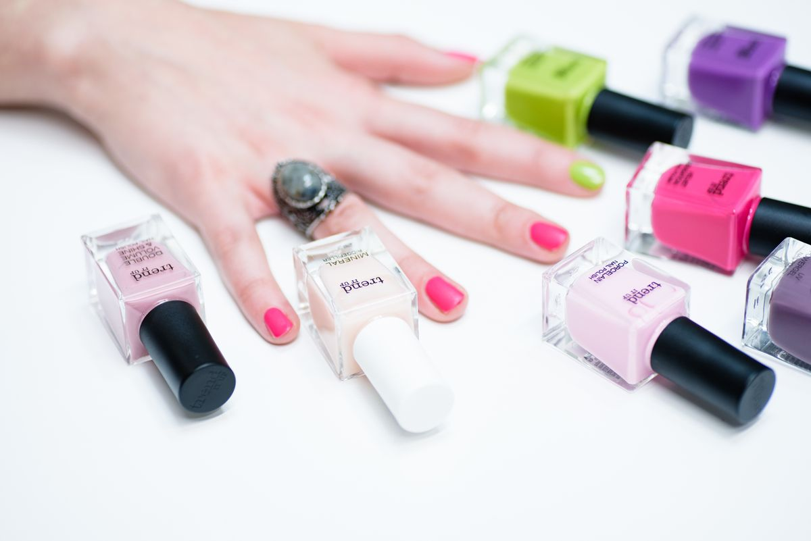

Гигиенический маникюр и педикюр
Источник цены ↗2200 ₽
Маникюр и педикюр. Личная страница мастера: услуги, цены и запись на бульваре Менделеева, 4.

В профиле опубликован гигиенический маникюр и педикюр за 2 200 ₽. Сравните с отдельными позициями; состав каждого варианта подтвердите у мастера.
Стоимость взята из открытого прайса. Перед записью подтвердите цену и состав услуги у студии.
Онлайн-запись ↗Посмотрите опубликованные услуги. Если сумма не указана, её можно уточнить напрямую у студии.
Стоимость взята из открытого прайса. Перед записью подтвердите цену и состав услуги у студии.
Такой услуги в этом списке нет. Попробуйте другое слово или уточните у студии.
Посмотрите материалы в профиле студии и отзывы в её карточке. Здесь использована только тематическая фотография для демонстрации дизайна.
Мурино
Россия, Ленинградская область, Всеволожский район, Мурино, бульвар Менделеева, 4
Перейдите в сервис онлайн-записи по кнопке. Услугу, мастера и время выбирают там; этот демо-сайт не бронирует визит.
Стоимость взята из открытого прайса. Перед записью подтвердите цену и состав услуги у студии. Данные просмотрены 2026-10-23.
В разделе «Работы» есть ссылки на профиль и карточку студии. Тематическое фото на первом экране не является работой этой студии.
Состав и окончательную стоимость процедуры, нужного мастера, адрес входа и доступное время. Если есть прежняя работа другого мастера, расскажите о ней при записи.